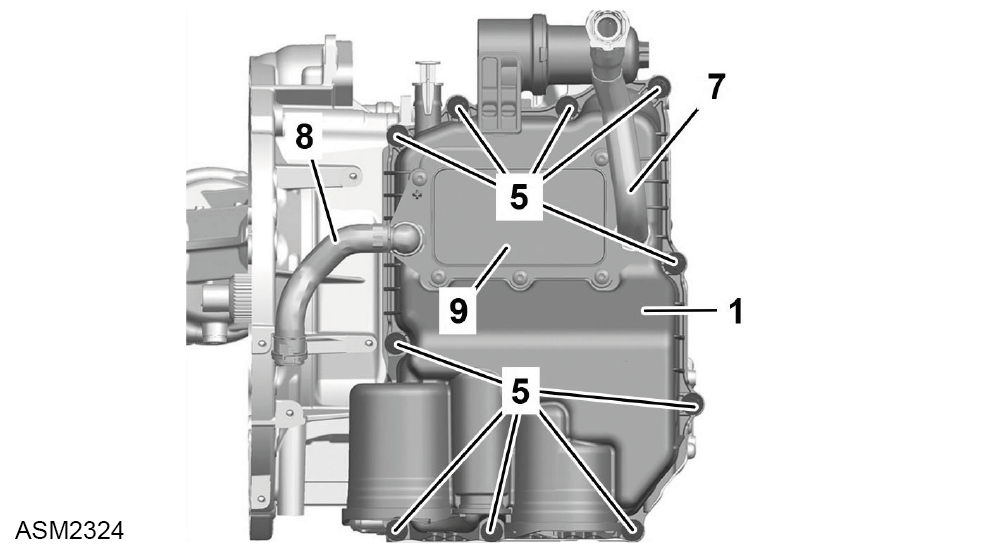
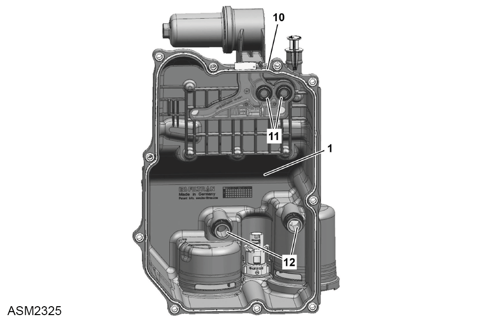
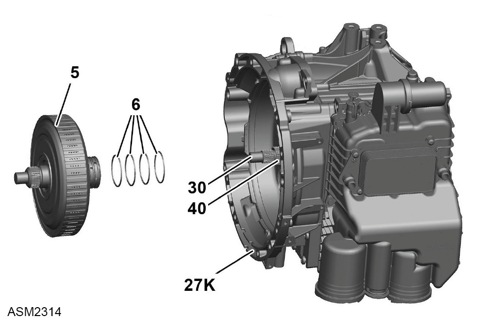

Transmission Assembly - 4 Cylinder
Print
Operation Code: 47.02.01-02
Important Information
 WARNING: Transmission oil is a toxic substance and can be lethal if ingested. Wear protective gloves, protective clothing and safety glasses.
WARNING: Transmission oil is a toxic substance and can be lethal if ingested. Wear protective gloves, protective clothing and safety glasses.
Removal
- Remove transmission assembly. Refer to procedure.
- Drain transmission oil. Refer to procedure.
Remove Oil Pan

- Remove bolts (5) (x10) securing oil pan (1) to transmission.
- Remove oil pan.
NOTE: Drain oil into a suitable container and dispose of appropriately.

- Remove and discard oil pan gasket (10).
- Remove and discard molded seals (11) (x2).
- Remove and discard plain couplers (12) (x2) with sealing rings.
Remove Controller Unit Assembly
- Remove and discard M5x60 Torx bolts (5) (x15) securing controller unit assembly (Y3/14) to transmission (3).
 CAUTION: These fasteners have been torqued to a specification where the threads may have been damaged or stretched. Always discard and replace with new on installation.
CAUTION: These fasteners have been torqued to a specification where the threads may have been damaged or stretched. Always discard and replace with new on installation.
- Remove controller unit assembly.
- Remove and discard sealing ring (8).
Remove Dual Clutch
- Remove retaining ring securing dual clutch cover to transmission.
NOTE: Do not damage seat of retaining ring and sealing surface on housing otherwise leaks may occur.
- Using a suitable tool, remove dual clutch cover.
- Remove shim.
- Remove axial bearing.
- Pull locking pin (A) upwards.
- Fully open lever (B).
- Install assembly tool (01) onto dual clutch (5).
- Pull locking pin upwards again.
- Close lever and latch locking pin into assembly tool.

- Remove dual clutch (5) from clutch housing (27K) using assembly tool.
NOTE: Discard sealing rings (6).
Install Dual Clutch
- Install dual clutch (5) into clutch housing (27K) carefully and without tilting using assembly tool.
NOTE: Renew sealing rings (6).
NOTE: Ensure sealing rings are correctly seated.
- Rotate dual clutch slightly until toothing of drive shaft (30) and hollow shaft (40) engages correctly in the dual clutch.
- Remove assembly tool from dual clutch.
- Measure installed dimension of dual clutch and adjust if necessary.
- Install axial bearing.
NOTE: Inspect axial bearing for damage, renew if necessary.
- Install shim.
- Clean sealing surface on housing.
WARNING: Only use cleaning agents and solvents in a well ventilated area.
- Install assembly sleeve onto drive shaft to protect sealing lip on cover.
- Install dual clutch cover.
- Install retaining ring.
NOTE: Inspect retaining ring for damage, renew if necessary.
NOTE: Ensure retaining ring is seated correctly.
- Remove assembly sleeve from drive shaft.
Install Controller Unit Assembly.
- Renew sealing ring (8).
- Coat sealing ring with transmission oil.
- Install controller unit assembly (Y3/14).
- Install new M5x60 Torx bolts (5) (x15) securing controller unit assembly to transmission (3). Torque 3 Nm + 60 degrees.
Install Oil Pan
- Clean component mating faces, prior to installation.
WARNING: Only use cleaning agents and solvents in a well ventilated area.
- Install new plain couplers (12) (x2) with sealing rings.
- Install new discard molded seals (11) (x2).
- Install new oil pan gasket (10).
- Install oil pan (1).
- Install bolts (5) (x10) securing oil pan to transmission. Torque 10 Nm.